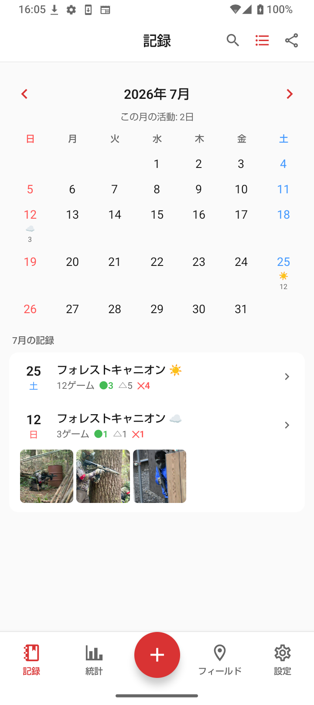
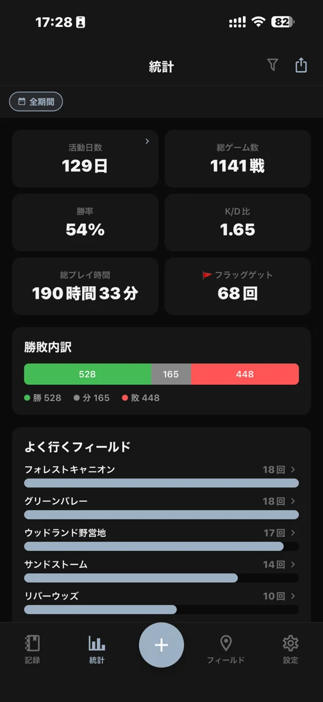
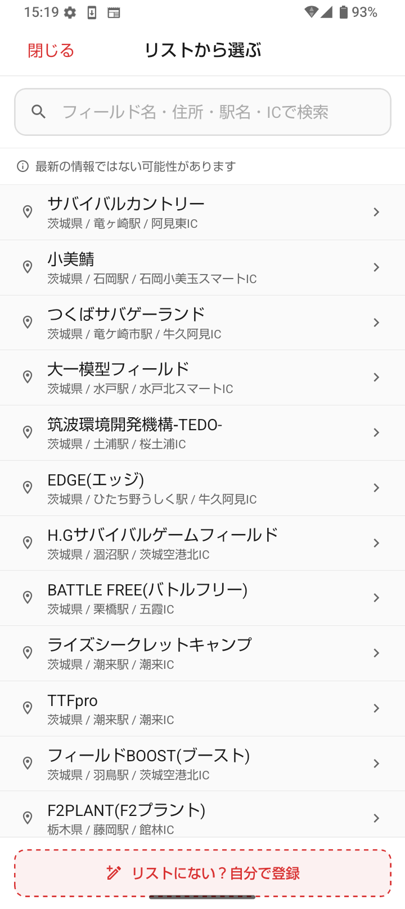
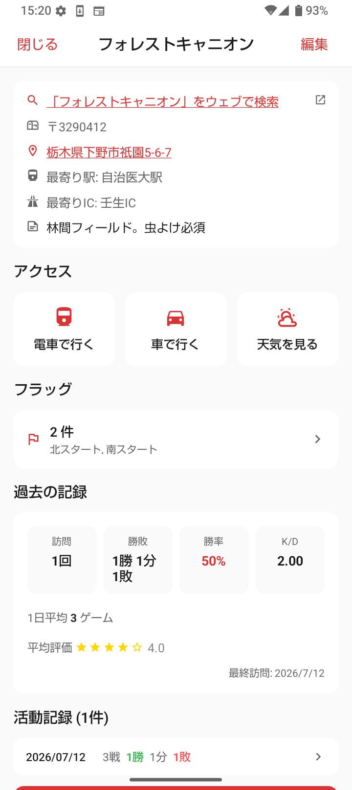
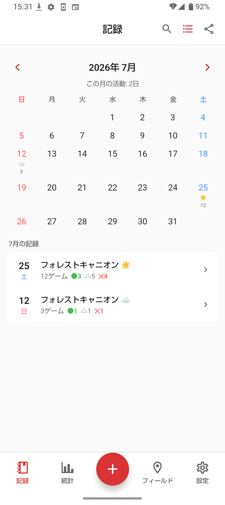
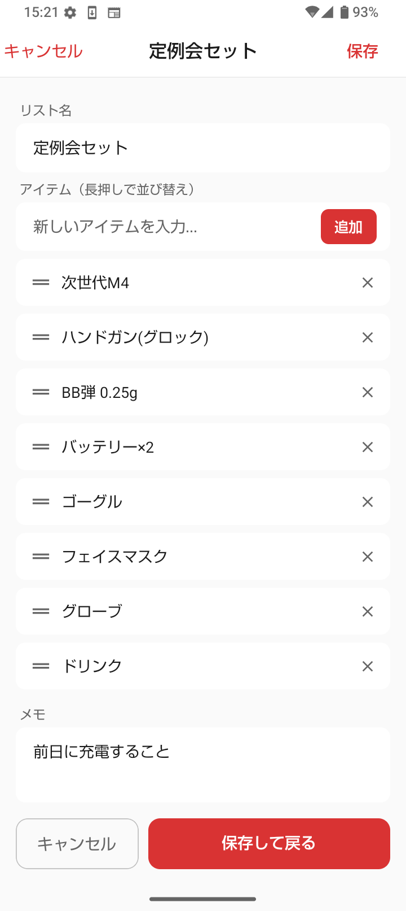
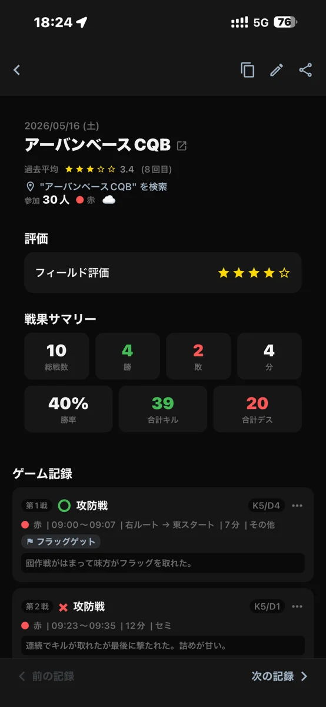
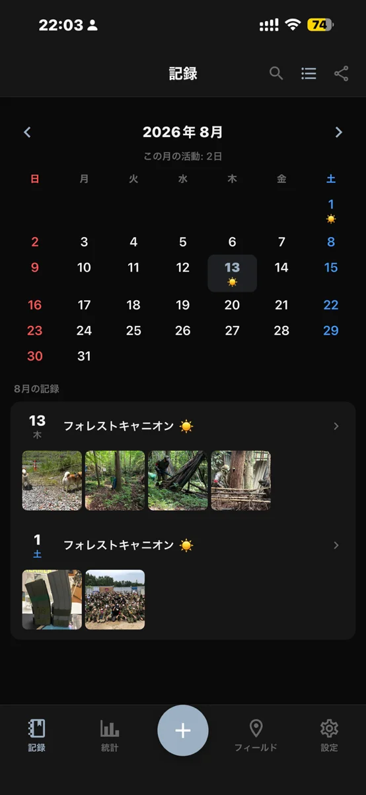
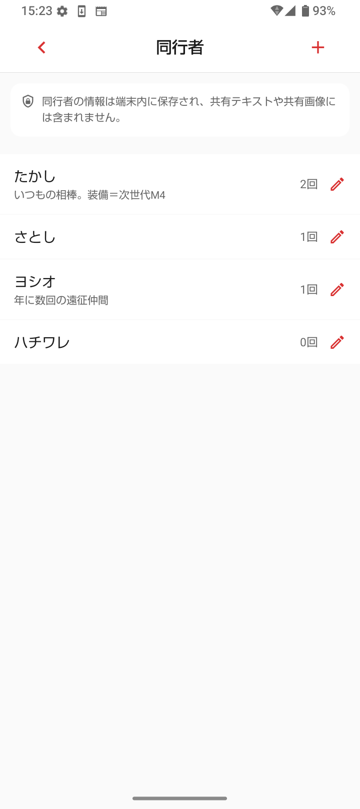
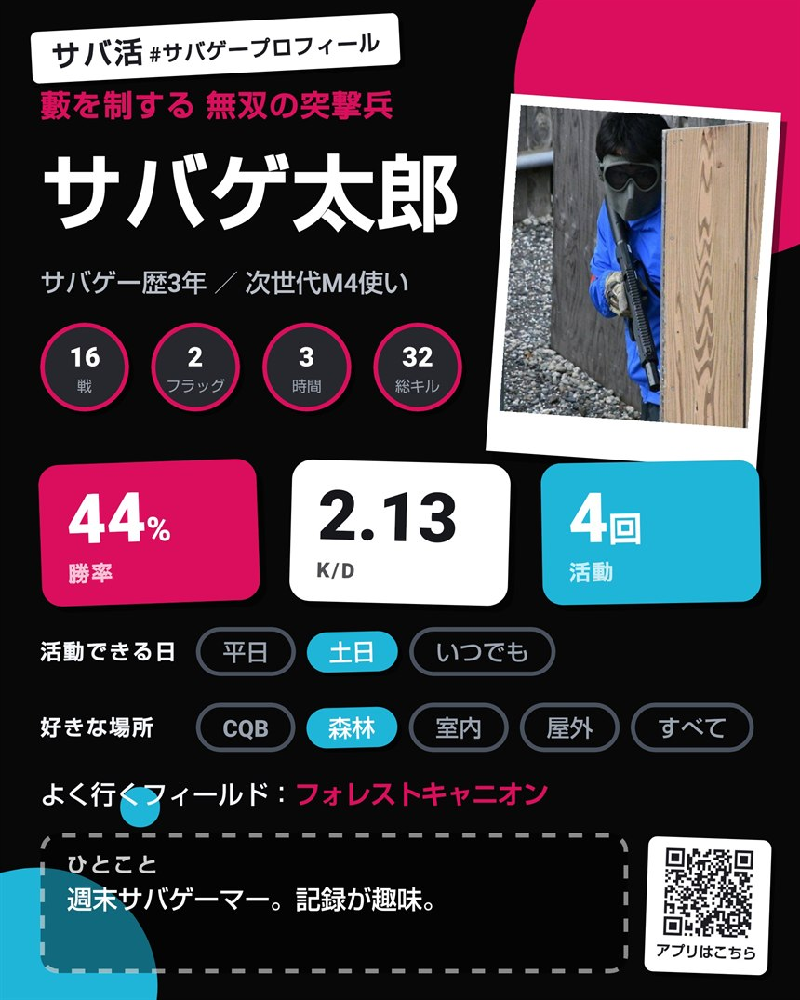

『サバ活』は、サバゲーの活動を応援するアプリです。
フィールドをさがす、その日の戦績を記録する、
あとから集計して振り返る。
アプリのご利用は無料です。


全国のサバゲーフィールド約300件を収録しています。名前を選ぶだけで、住所・最寄りIC・最寄り駅・無料送迎の有無がわかります。天気や電車の乗換も、ワンタップで調べられます。


予定を登録しておくと、前日に通知でお知らせします。

装備リストを作っておくと、出発前に持ち物を確認できます。

勝敗・キル数・デス数・ゲーム形式を、タップで入力できます。

その日の写真を、記録に残せます。

同行者を登録しておくと、誰と何回行ったかがわかります。

出撃日数、勝率、K/D、総プレイ時間、よく行くフィールドを自動で集計します。
記録した戦績を入れたプロフィールカードを、画像として書き出せます。二つ名をつけたり、色を選んだりできます（無料4色・プレミアム33色）。できあがったカードは、XなどのSNSでそのまま共有できます。

記録・写真・フィールド・同行者・装備リストは、無料のままご利用いただけます。プレミアムは買い切りで、月額料金はありません。
アカウントの作成やメールアドレスの登録は必要ありません。戦績や写真などの記録は、お使いの端末内に保存されます。
はい。記録・写真・フィールド・同行者・装備リストの登録に制限はありません。基本の統計も無料でご覧いただけます。
かかりません。プレミアムは買い切り980円で、追加のお支払いはありません。
設定からデータを書き出し、新しい端末で読み込むと引き継げます。写真は引き継がれませんので、必要な場合は端末の写真アプリへ保存してください。
使えます。記録は端末内に保存されるため、通信のない場所でも記録・閲覧できます。
表示されません。
入りません。同行者の名前は端末内にのみ保存され、共有用の画像や文章には含まれません。
日本語のみです。
フィールド情報は当社が収集したもので、最新でない場合があります。アプリ内で編集してお使いください。